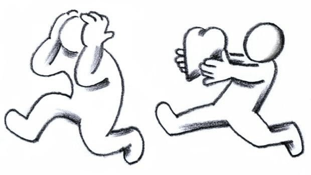

Seu Resultado Completo
"Você se protege através da distância"
Se identificar com esse perfil não é sinal de que você não sabe amar. Pelo contrário: você sente, e sente fundo. Só que, em algum momento da sua vida, você aprendeu que expor o que sente pode custar caro. E, desde então, colocar distância virou proteção.
Esse padrão costuma se formar quando, na infância, buscar colo, atenção ou conforto não trazia o retorno esperado. Talvez o pedido fosse ignorado. Talvez viesse uma resposta fria, ou até uma cobrança pra você "se virar sozinho". Com o tempo, uma criança que passa por isso aprende uma lição prática: pedir é arriscado, então o mais seguro é não precisar de ninguém. Essa autossuficiência, que começou como sobrevivência, virou identidade.
Hoje, isso aparece assim: quando uma relação começa a ficar mais próxima, mais séria, mais exposta, alguma coisa dentro de você pede espaço. Você tem dificuldade de mostrar o que sente, mesmo quando sente muito. Prefere resolver tudo sozinho a admitir que precisa de ajuda. E, por dentro, seu corpo reage ao vínculo (o coração acelera, a tensão aumenta) mesmo quando por fora você parece calmo e no controle.
Um mal-entendido comum sobre esse perfil: pensar que você escolhe se afastar de forma fria e consciente, como se não se importasse. Não é isso. Na maioria das vezes, esse afastamento acontece no automático, como um mecanismo de defesa que age antes mesmo de você decidir. Você se importa. Só aprendeu, cedo demais, que era mais seguro não demonstrar.
O caminho aqui começa pequeno: reconhecer o momento exato em que o impulso de recuar aparece, e, aos poucos, praticar ficar um pouco mais perto, mesmo com o desconforto. Não é sobre virar outra pessoa de uma vez. É sobre ampliar, devagar, a sua capacidade de deixar alguém entrar.
"Se eu depender de alguém, posso me machucar."
Dra. Aline Zanette
Médica · Saúde Mental · CRM 36587
Ferramenta de autoconhecimento. Não é diagnóstico médico ou psicológico e não substitui avaliação individual realizada por profissional habilitado.